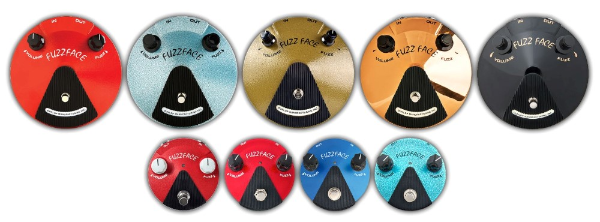
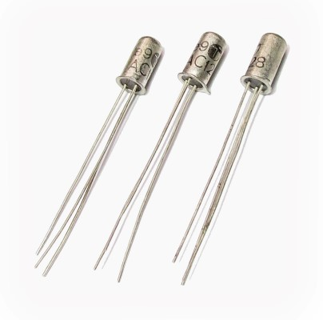
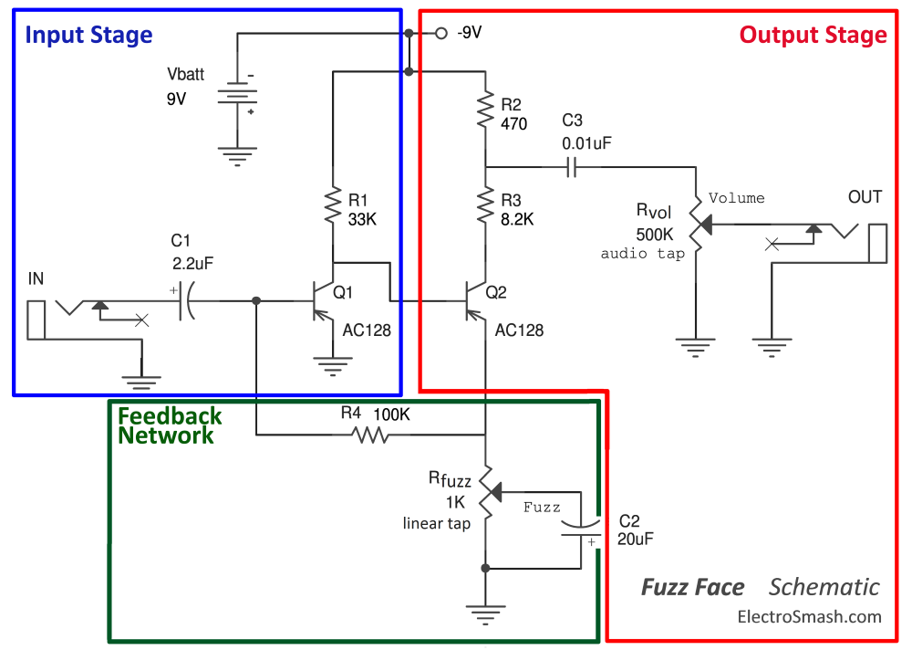
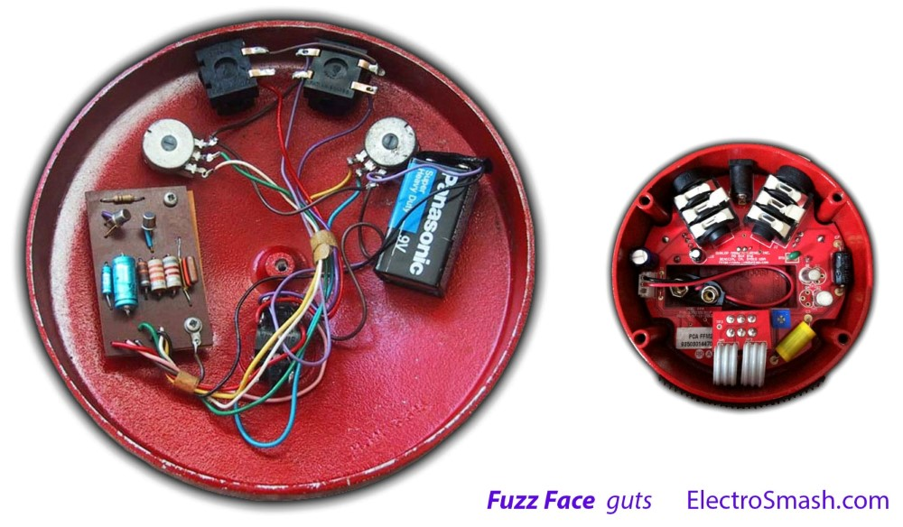
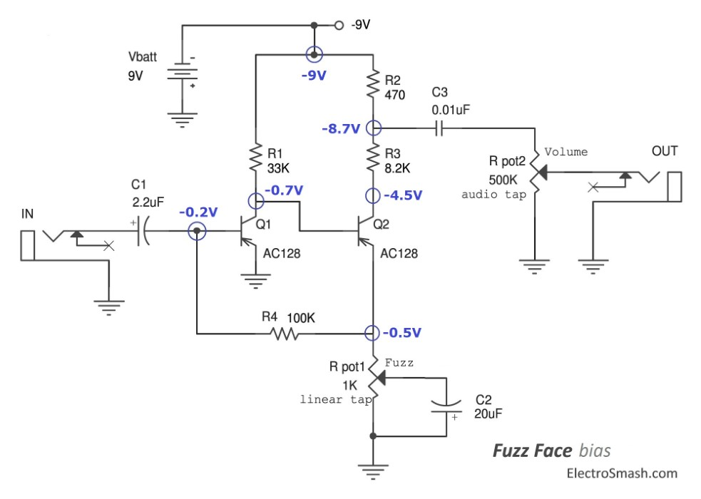
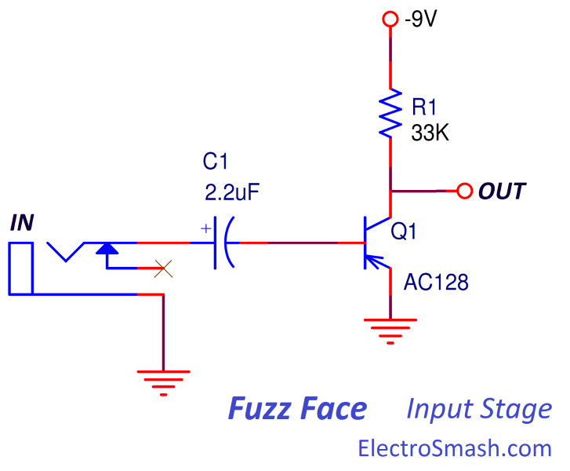
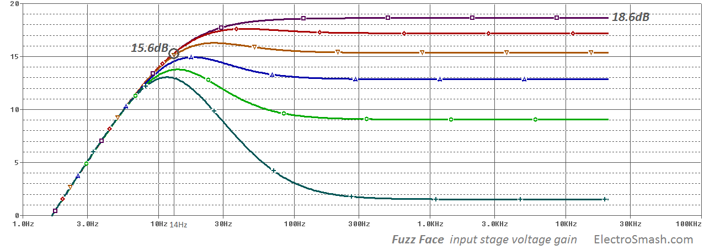
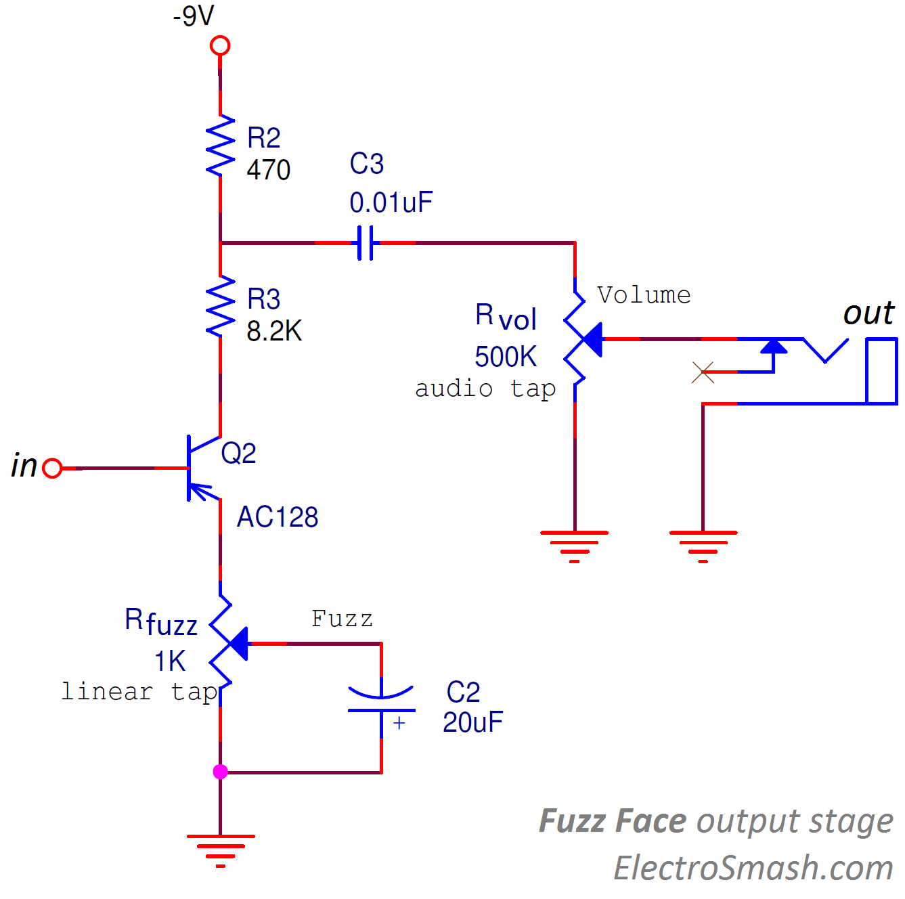
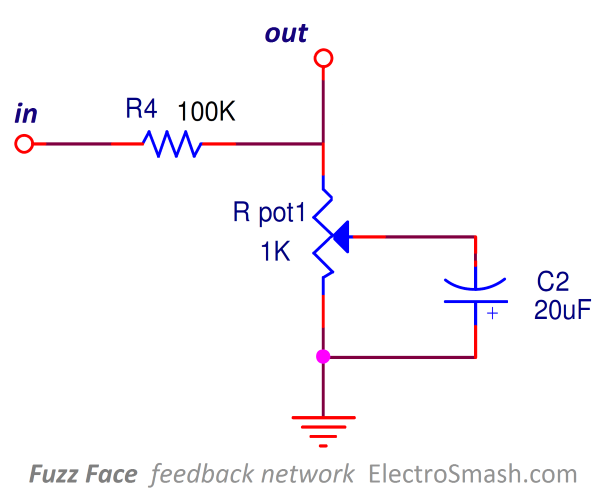

The Fuzz Face is a distortion guitar pedal designed in London by Arbitrer Electronics Ltd in the autumn of 1966. It produces a characteristic high distorted sound called fuzz.
Ivor Arbiter took the round shaped enclosure idea from a microphone stand and it was the first pedal including a DPDT stomp-switch. The effect became very popular because Jimi Hendrix played it and there were not many distortion pedals around at that time.
The gist of the Fuzz Face remains in the simple circuit that uses eleven components (2 transistors, 4 resistors, 3 caps and 2 pots) and the astonishing tones created with them; delivering a soft asymmetrical clipping that changes to hard clipping in both semi-cycles under the fuzz pot action.
Arbitrer Electronics manufactured the pedal from 1966 to 1975, Dallas Music Industries did a final batch in 1975-77, after that the production stopped. During its lifetime the pedal went through some minor cosmetic but major sonic changes. The fuzz face was re-issued from 1986 to 2000. In 1993 Dunlop took over the production selling the fuzz face in different flavors. Today, both the Dallas Arbiter and Fuzz Face trademarks are owned by Dunlop Manufacturing Inc.
This analysis covers the first Arbitrer Fuzz Face model equipped with PNP germanium transistors from the first releases which are considered the best sounding.
Table of Contents.
1. The Fuzz Face Models.
1.1 The transistors.
2. Fuzz Face Circuit.
2.1 Fuzz Face Layout.
2.2 Components Part List / Bill of Materials.
2.3 Circuit Bias Points.
3. Fuzz Face Input Stage.
3.1 Input Impedance.
3.2 Voltage Gain.
4. Fuzz Face Output Stage.
4.1 Output Impedance.
4.2 Voltage Total Gain.
4.3 Power Supply.
5. Fuzz Face Global Feedback Network.
6. Fuzz Face Frequency Response.
7. Building the Perfect Fuzz Face
8. Resources.
8.1 Datasheets.
The earliest models were covered in red, light or dark gray Hammerite paint with the Fuzz Face logo in white or black, the text in the smile reveals the pedal's age. The earliest ones were Arbiter-England, then they became Dallas-Arbiter England sometime in 1968 since then there have been a variety of words in the smile.
These days Dunlop manufactures a number of different finishes and sizes using various transistor flavors: 
1.1 The Fuzz Face Transistors.
The transistors are the most sensitive part of the design with a whole mythology that has grown up around them. There are two main possibilities:
- Germanium transistors: are claimed to have a warmer, creamier smoother sound.
- Silicon transistors: with higher gain are a bit harsher with some more high end.
Germanium transistors are considered to have an overall better sounding to this effect with some drawbacks: germanium manufacturing is not as consistent and controlled as silicon and they have shorter lifespan and more temperature sensitivity.
Dennis Cornell: "All the transistors worked in a very similar way and all did the job, but they did give a slightly different tone. I think the Arbiter-England one didn’t use the NKT275 germanium transistor; in those days we used the AC128."
"There were always problems with them, so I’d get involved in testing and repairing because they just didn’t all work right!" 
This last quote from D. Cornell explains why the production switched to the modern, temperature independent, cheaper and stable silicon transistors like the BC183L, BC183KA, BC130C, BC108C, BC109C, BC209C, and BC239C.
Germanium Transistor Selection: It is important to select the right transistor from the whole batch in order to archive the best effect performance. Germanium transistors tend to have high leakage current and an inconsistent gain value. This gain variation is crucial in the design, the best match uses a low gain in the first stage (β=70-80 approx.) and a high gain in the second stage (β=110-130 approx.).
However, there are some other options, for a more compressed sound you can use β=90-120 for Q1 and β=150-190 Q2.
There are some circuits that help to measure the transistor gain.
The circuit is a simple 2 stage amplifier with a feedback network path. It can be broken down into three parts: Input Stage, Output Stage and Feedback Network. The last block (the Feedback Network) will affect the rest of the analysis because it will influence the most important parameters: voltage gain, input impedance, output impedance and frequency response. 
The fuzz face design was inspired in other contemporary fuzz pedals like the Maestro Fuzz Tone (designed by Glen Snotty) and the Sola Sound ToneBender (designed by Gary Hurst) although the Fuzz Face was an easier circuit than the competitors with only 2 transistors instead of 3.
There is some controversy of when and where the 2-transistor topology appeared: the Tone Bender MK1.5 is similar to the Dick Denney designed Vox Distortion Booster circuit, nearly identical to the Italian made Vox Tone Bender circuit, and the Arbiter Fuzz Face circuit.
The single layer PCB with through-hole components fits without problems inside the oversized cast iron enclosure. In the picture below you can see the original enclosure (left) compared with the new compact Dunlop box (right):

2.2 Fuzz Face Components Part List / Bill of Materials:
This is the reduced list of components needed to build a Fuzz Face:
1 C1: 2.2 uF
1 C2: 20 uF
1 C3: 0.01 uF
1 R1: 33KΩ
1 R2: 470Ω
1 R3: 8.KΩ
1 R4: 100KΩ
1 Rvol: 500KΩ (Audio tap)
1 Rfuzz: 1KΩ (Linear tap)
2 Q1, Q2: AC128
Jack in, Jack out, battery clip, DPDT foot-switch.
These are the most important DC bias points of the circuit. 
- For the bias values showed above, the fuzz potentiometer is set to the midpoint (500Ω)
- The DC voltages might change due to transistor β variations, in this case, we are using a Q1 with β=85 and Q2 with β=120. If you want the see the AC128 PSpice simulation model, check the last part of this article.
- The important settings to get the best sound out of a Fuzz Face is to have Q1VC=-0.5 to -0.7 and Q2VC=-4.5V. For this purpose, some designers include trimmer resistors to substitute R1 and R3 so the VC of the transistors can be easily adjusted. More info on physics.mcgill.ca/~grant/Stuff/fuzzface.txt
The input stage is a Common Emitter (Collector Follower) PNP amplifier, it provides a high voltage gain with low input impedance and high output impedance. It is not the ideal input stage for signal integrity but the best for simplicity and fast high gain. 
- The 2.2uF input capacitor C1 blocks any DC level, removing hum and protecting the pedal/guitar against dangerous DC levels.
- The 33KΩ R1 resistor sets the main input stage parameters like the voltage gain, bias points, and maximum collector current.
3.1 Fuzz Face Input Impedance:
Is equal to the input impedance of a common emitter stage. It can be calculated as:
Zin = Zin of PNP Common Emitter = rπ
For this math calculation the feedback network is ignored but in practice, it will lower the input impedance to 5KΩ approx. The Fuzz Face has a very low input impedance that will change with the position of the RFUZZ potentiometer (between 5.2KΩ and 8.4KΩ in the simulation). So the feedback network has a negative impact on this parameter.
As a rule of thumb, Zin should be at least 1 MΩ. In other pedals with similar input stages like the one in the Big Muff Pi a series resistor is placed at the input in order to higher the impedance (at the cost of creating a voltage divider that reduces the available input signal).
The Fuzz Face low input impedance will load the guitar pickups. This is the reason why they do not respond well when they are placed after other pedals. A practical advice is to put your Fuzz Face first on the pedal chain, just after the guitar. The germanium transistor needs to see the inductance/impedance from the guitar pickups. If they see a buffer at the input, they tend to sound awful.
3.2 Voltage Gain of the Input Stage:
In a Common Emitter transistor the voltage gain can be calculated following the equation:
note: The gm value of a transistor is defined as:
where:
- IE is the DC emitter current, can be calculated looking at the bias points of the circuit, in a simplified form IE=(VCC-VC)/R1=(9V-1.6V)/33K= 0.22mA
- VT is the thermal voltage of a transistor, at room temperature the value is approximately 25mV.
In the real life, the input stage will not reach 49dB of gain, the feedback network will reduce this levels to 18.6 dB approx. In the image below the voltage gain of the input stage is shown varying the fuzz potentiometer.

note: The hump originated when the fuzz control is set to minimum (the lowest dark green trace) is due to the C2 bypass capacitor which creates also filter (C2 - RFUZZ). This effect is more noticeable when the gain of the pedal is low because it has more signal feedback coming from the output through R4. When the gain goes high the feedback is smaller and the high pass filter influence is less important. The relationship between feedback and gain is explained in the Feedback Network Section.
FF Sound Signature I: Asymmetrical Clipping: For maximum dynamic range Common Emitter amplifiers are usually biased to have a collector voltage (VC) equal to VCC/2, in this case, it should be -4.5V. In the Fuzz Face the Q1 collector voltage sits around -1.6V, so the voltage swing on the positive semi-cycle is much bigger than in the negative semi-cycle.
For small signals (less than 50mVpp), the input stage will first hit soft saturation on the negative semi-cycle of signal like in the image below, this asymmetric clipping distortion is very musical.
When the input signal has a higher level, the input stage will soft-saturate in both semi-cycles like in the image below. This feature of giving soft asymmetric distortion to small signals and clipping harder in both semi-cycles on big input signals (strong chords) gives a nice touch sensitivity which enhances the expressive possibilities.
The output stage is again a PNP Common Emitter Amplifier, this time with a variable emitter degeneration resistor (RFUZZ=1KΩ). 
4.1 Fuzz Face Output Impedance:
The value of the output impedance can be calculated using the formula:
Zout = RVOL//470Ω
Zout MAX = RVOL//470Ω=500K//470Ω = 469Ω
The fuzz face output impedance is affected by the feedback network and has a real value of 15KΩ (measured at 1KHz with RVOL=500KΩ). This value varies with the volume control level and the fuzz control position. However, it can be considered as a bad output impedance, it is too high and can carry problems when it is placed in the pedal chain.
The output capacitor C3 blocks the DC level from saturating any device following the Fuzz Face. It creates a high pass filter together with RVOL that will determine the lowest frequency that gets out of the pedal. Making this cap bigger will let more low frequencies out. The cut frequency of this HPFilter is:
The minimum cut frequency is 31Hz, it goes higher when RVOL goes down. It means that with low volume levels, the amount of bass frequencies of the signal are slightly reduced, making C3 bigger will let more low harmonics out. You can read more about it in the Frequency Response section.
4.2 Fuzz Face Total Voltage Gain:
The emitter degeneration resistor RFUZZ creates a local negative feedback, making the second amplifier stage more stable and immune to gain variations due to temperature, bias current and transistor intrinsic properties.
With this emitter resistance added, the Common Emitter PNP major parameters (ignoring by the moment the feedback network) can be determined by the ratio between the collector resistors (R2 + R3) to and the emitter resistor (the portion of RFUZZ not shorted to ground through the 20uF cap).
The voltage gain (AV) can go from 8.2 to as high as the transistor's basic internal gain (when RFUZZ is maxed out).
If we take into consideration the feedback network, once again the second stage will not reach values as 18dB. In this case, the total voltage gain measured at Q2 collector is around 19.5dB. Remember that the input stage had a gain of 18.6 dB, that leaves the second stage a total amount of 1dB of gain (19.5-18.6=0.9dB). The general amount of gain is considerably reduced due to the feedback network.
In the above image, the output voltage at Q2 is shown under the action of the RFUZZ potentiometer (the volume is set to max). It exhibits an attenuation in the low frequencies (high pass filter) with a fc=14Hz inherited from the input stage.
BUT the output of the pedal is not directly taken from Q2 collector, there is a voltage divider created by R2 and R3 (the power supply is effectively at AC ground). This divider reduces the gain by a factor of R2/(R2+R3) = 470/(470+8K2) = 0.054 (-25dB), so the real gain of the output stage is:
GVTOTAL = GVPEDAL - Attenuation of R2/(R2+R3)= 19.5 - 25 = -5.5dB
This voltage divider created by R2 and R3 will greatly reduce the output level. The value usually does not get as low as -5.5dB, the series resistor of the battery should be taken into consideration and will raise the output level.
It might look funny but It has a reason: the output signal is not much larger than the input signal to keep the huge amount of signal available from over-driving the input of the pedal or amplifier following it. The fuzz is not designed to overdrive the following system by level.
note: FF sounds different with different batteries and with the same battery as it gets run down. The internal series resistance of the battery is added to the 470Ω R3 resistor, modifying the value by a significant amount.
Emitter degeneration capacitor C2:
Any impedance between C2 emitter and ground (RFUZZ) will reduce the gain of the output stage, it is a form of local negative feedback. Increasing this impedance will reduce the gain. If we are looking for high gain it is a common practice to have part or all of the emitter resistor grounded with a bypass capacitor.
Capacitors present an impedance that decreases with frequency, the bias (DC) points will remain the same but high guitar (AC) signals will get higher voltage gain. In terms of design, the bypass capacitor C2 should have a reactance, at the lowest frequency you are interested to amplify, less than the value of RFUZZ. We can use the formula:
All the frequencies over 8Hz get full amplification. The 20uF is so big that almost all the frequencies get full amplification.
FF Sound Signature II: Soft Clipping - Hard Clipping: As the second stage is driven harder, it can reach hard clipping in both semi-cycles of the signal. The clipping begins softly for smaller signals (and gains) and then with the fuzz potentiometer action the clipping goes harder with harder playing. The second amplifier stage can make the clipping harder, with sharper squared corners under the fuzz potentiometer action.
For component economy, the power supply does not include any capacitors to remove ripple from the power line which is something common in raw fuzz pedals. The usual solution in guitar pedals is to add some power filtering by placing 47~100uF cap together with a 100nF from the +9v to ground.
5. Fuzz Face Global Feedback Network.
Amplifiers use current or voltage as input or outputs, you can check the amplifier classification. The fuzz face has a negative feedback called shunt-series feedback (Current Controlled Current Source CCCS). Part of the output current is taken from Q2 emitter and introduced as current in Q1 base, so the feedback resistor R4 is shunt connected with the input and in series connected with the output 
Why using feedback?
In amplifier design the degenerative (negative) feedback is used to:
- Desensitize the gain: make the gain value less sensitive to transistors (i.e component variation caused by temperature).
- Reduce nonlinear distortion: make the gain constant.
- Reduce the noise: minimizing the contribution to the output of unwanted electrical signals.
- Control the input/output impedance: raising or lowering their values.
- Extend the bandwidth of the amplifier.
The properties above are obtained at the expense of a reduction of gain. As a rule of thumb with more feedback, there is less global gain, following the formula:
Where
- AFB = Total current gain of the amp in the closed loop.
- AOL = Current gain of the amp in open loop
- B = Feedback constant (not to be confused with the transistors β parameter).
How does the feedback work in the Fuzz Face?
The job of the feedback network is basically to reduce the huge gain of the Fuzz Face stages, making the whole circuit more stable and independent from problematic germanium transistors:
- When the fuzz control (1KΩ pot) is set to minimum, a big amount of signal is sent back to the input, creating a big feedback loop and reducing the total pedal gain (left image below).
- When the fuzz control increases the attack, the 20uF C2 cap will gradually shunt the negative feedback to the ground, thus letting the circuit operate with more gain (right image below).
6. Fuzz Face Frequency Response.
The FF frequency response is shaped by the three capacitors C1, C2 and C3:
- C1: The 2.2uF input cap creates a high pass filter together with the input pedal impedance (5KΩ approx.), removing dangerous DC levels, hum and overloading bass.
All harmonics below 14Hz will have 6dB/oct of attenuation
- C2: Shunts part of the signal to ground, but its value is so high (20uF) that in the worst case only signals below 8Hz (and the audio spectrum) will be affected, so the contribution for the general frequency response can be discarded.
- C3: The output cap creates also a high pass filter, removing the excess of bass that the Fuzz Face delivers:
All harmonics below 31Hz will have 6dB/oct of attenuation. If the level goes down, the 500KΩ resistor will be reduced and the filter will remove more bass.
Eric Johnson seems to prefer a 100KΩ level resistor over the stock 500KΩ. Using a smaller resistor, the filter will cut more lows out (fc=160Hz) which will result in a brighter sound.
The plot below represents the total frequency response of the fuzz face, the different lines show the effect of the volume potentiometer. As the volume goes lower (blue line), the graph shows a steeper slope with more high content. This is due to the C3 output high pass filter effect ( C3 - RVOL)
The graph also shows a general roll off of the bass harmonics under 14Hz, this is due to the high pass filter created by C2 and Zin (input impedance of the pedal).
Broadly speaking the frequency response of the Fuzz Face is not very innovative, it just removes some bass and keeps all the highs which contribute to have powerful distortion. Other fuzz pedals like the Big Muff Pi have a more distinctive frequency response that could shape the tone in a more innovative way.
This last image below shows in red color the typical output signal, characterized by an asymmetric waveform and a hard-clipping when the fuzz potentiometer is maxed. The big amount of gain will clip the signal easily creating large amounts of higher harmonic content. Note that the output signal is not completely flat when it clips (it is slightly tilted), this feature adds more character to the sound .
The Fuzz Face circuit has 9 components. Seems like simple stuff, and in principle it is, but the actual implementation of the pedal has plenty of black magic and mystery associated, and it takes a lot of effort to get the things sounding just right.
We have created a project so you can build the perfect Fuzz with all the knowledge and experience that we have while keeping the tweaks and character that make this vintage pedal distortion to sound round and harmonically pleasant.
The Technology of the Fuzz Face by R.G Keen.
Fuzz Face Description by ScreaminFX.
Electrical Engineering Thesis by William E. Overton focused on the Fuzz Face.
Discussion Paper About Fuzz FAce Batteries by DingoTone.com
Arbitrer Fuzz Face by Fuzzcentral.
AC128 Transistor datasheet 1 pdf
AC128 Transistor datasheet 2 pdf
PsPice models used for AC128 Fuzz Face simulation:
- AC128 with β=85
.MODEL GERPNP_LOWGAIN PNP(IS=85.8N BF=85.000 NF=1.000 VAF=102.207
+IKF=9.981M ISE=0.435N NE=1.200 BR=20.000 NR=1.000 VAR=20.000
+IKR=1.248M ISC=120.8N NC=1.200 RB=173.312 IRB=5.000U RBM=43.328
+RE=20.000 RC=60.000 CJE=6.000P VJE=0.400 MJE=0.400 TF=0.150U
+XTF=9.996 VTF=2.000 ITF=9.983M PTF=1.000 CJC=3.750P
+VJC=0.600 MJC=0.330 XCJC=0.650 TR=2.865U
+CJS=0.0 VJS=0.700 MJS=0.500 XTB=1.000 EG=0.670
+XTI=4.000 KF=5.000F AF=1.000 FC=0.750)
.END
- AC128 with β=120.
.MODEL GERPNP_HIGHGAIN PNP(IS=120.8N BF=120.000 NF=1.000 VAF=102.207
+IKF=9.981M ISE=0.435N NE=1.200 BR=20.000 NR=1.000 VAR=20.000
+IKR=1.248M ISC=120.8N NC=1.200 RB=173.312 IRB=5.000U RBM=43.328
+RE=20.000 RC=60.000 CJE=6.000P VJE=0.400 MJE=0.400 TF=0.150U
+XTF=9.996 VTF=2.000 ITF=9.983M PTF=1.000 CJC=3.750P
+VJC=0.600 MJC=0.330 XCJC=0.650 TR=2.865U
+CJS=0.0 VJS=0.700 MJS=0.500 XTB=1.000 EG=0.670
+XTI=4.000 KF=5.000F AF=1.000 FC=0.750)
.END
My sincere appreciation for D.Clark support.Thanks for reading, all feedback is appreciated This email address is being protected from spambots. You need JavaScript enabled to view it.
Some Rights Reserved, you are free to copy, share, remix and use all material.
Trademarks, brand names and logos are the property of their respective owners.


{kind=link}
{kind=link}
{kind=link}
{kind=link}
{kind=link}
{kind=link}
{kind=link}
{kind=link}
{kind=link}
{kind=link}
{kind=link}
{kind=link}
{kind=link}
{kind=link}
{kind=link}
{kind=link}
{kind=link}